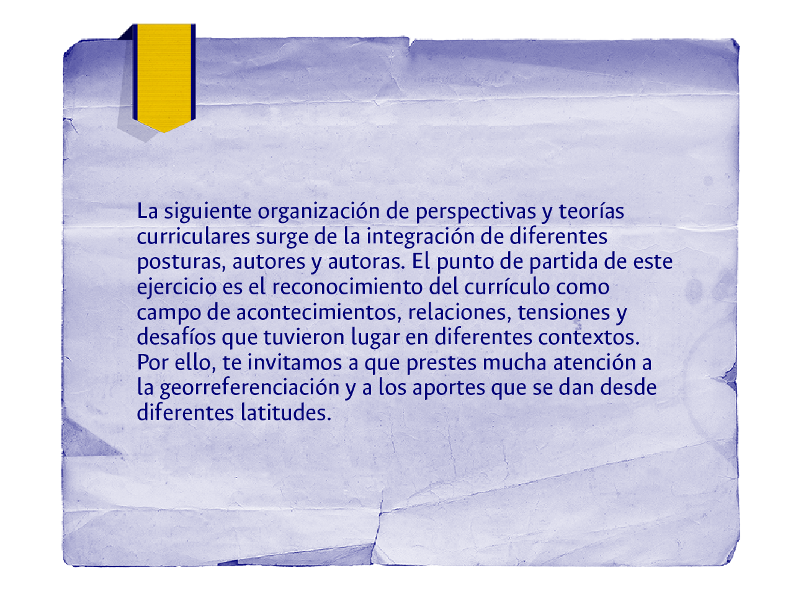

Espiral del tiempo: currículo y teorías curriculares
En esta espiral del tiempo, realizarás un recorrido histórico por las conceptualizaciones del “currículo” mediante una travesía en la que es posible conocer las posturas de autores y autoras, los movimientos y las perspectivas teóricas. La espiral del tiempo rompe con la idea del tiempo lineal, según la cual algunos acontecimientos suceden a otros y quedan en el pasado, para instalar la concepción bajo la cual las diferentes tensiones, construcciones y perspectivas alrededor del currículo se mezclan entre sí, toman rumbos separados y luego se conectan, e incluso hoy podemos hablar de algunos rasgos comunes que perviven a lo largo del tiempo, pese a las posturas de análisis diferenciados que se han instaurado en este campo de estudio. Vamos a nuestra espiral:

Menú
Espiral del tiempo: currículo y teorías curriculares